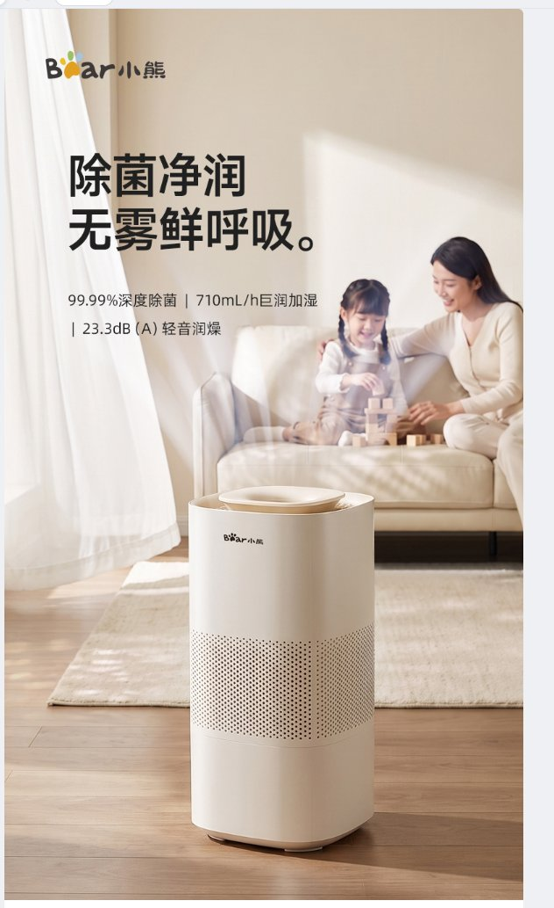

PinNote
JSQ-H60L2
/
V2
添加设计稿
版本对比
双击
左键打点 ·
右键拖动
框选
×
已保存
保存
导出 PDF
归档
项目
+
当前项目
JSQ-H60L2
×
V1
V2
＋ 添加版本
YMJ-K40Z7
×
已归档
PBJ-A08C1
×

×
改为竖向列举，再加个底衬
×
雾气不够自然，参考右图换一种素材
×
写下修改建议…
×
点批注
框批注
−
100%
+
适应
图①
×
图②
×
＋
拖入或粘贴参考图
预览开关（非界面一部分）
强调色
图钉红
现行蓝
建议卡
白卡
米色便签
画布底
纯色
点阵